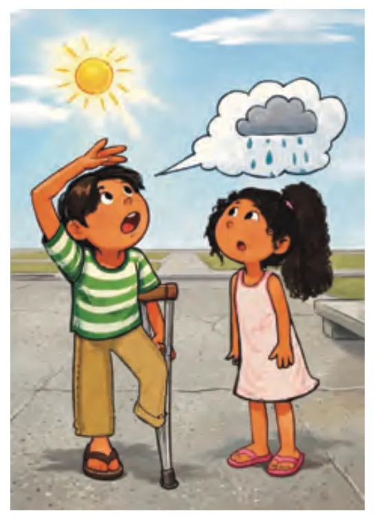
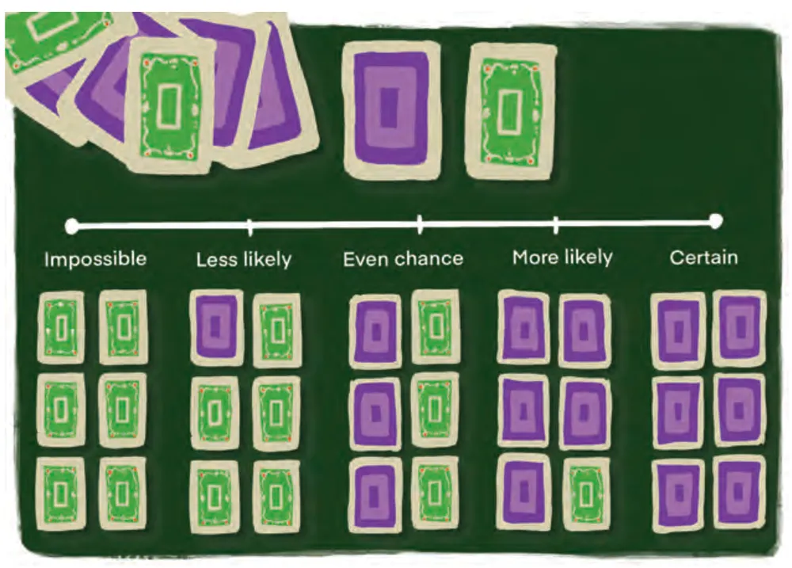
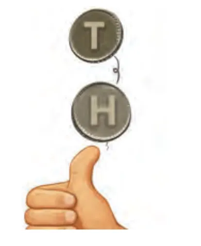
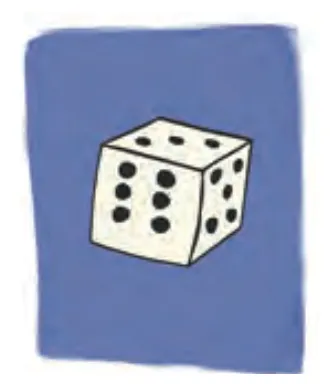
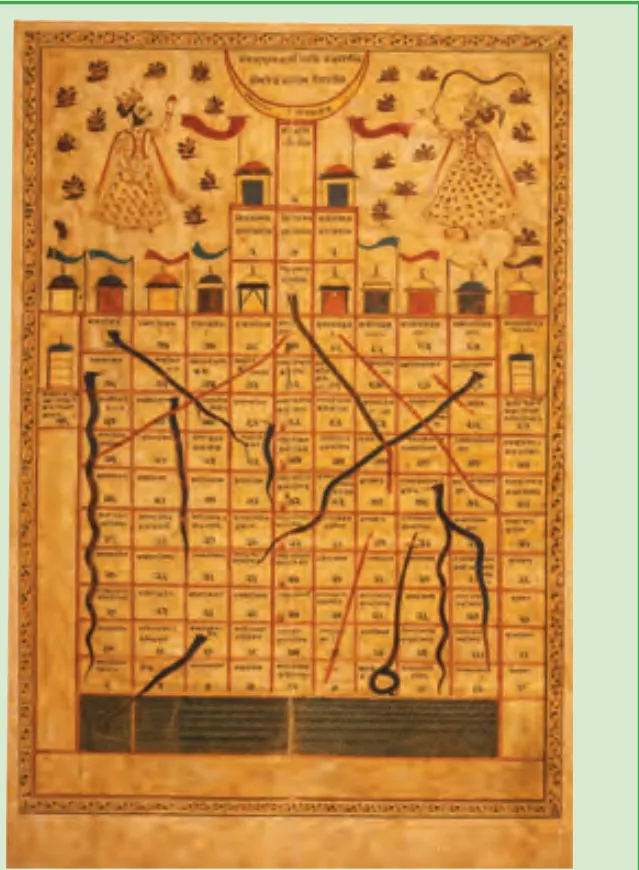
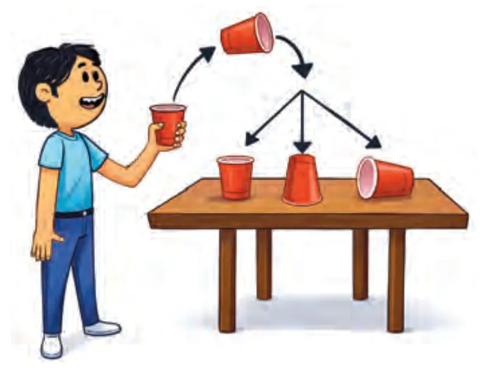
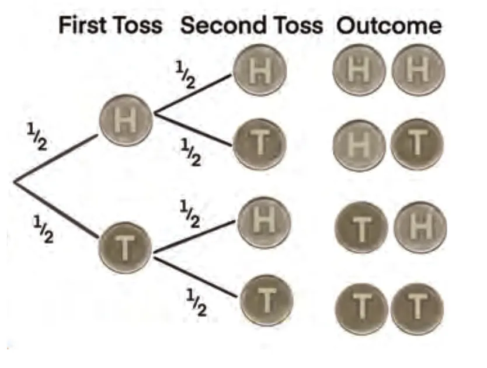
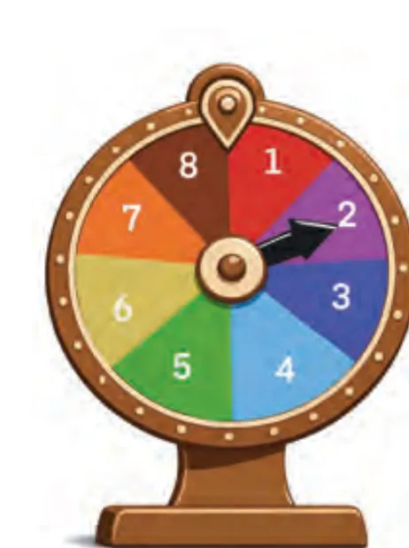
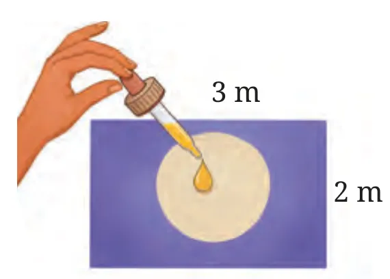

What is probability?
Probability is a kind of measurement. Length measures how long, area measures how much surface, and probability measures how likely an event is to happen.
You use it every day without noticing:
- 🌧️ Is it going to rain today?
- 🏑 Will our school win the inter-school hockey match tomorrow?
- 🎟️ Will I be chosen in the monthly lucky draw to perform at the assembly?

These are random events. We know the possible outcomes (rain or no rain; win, draw or lose; one student gets picked) but we cannot know in advance which one will happen. There is an element of chance every time.
We describe chance with words like impossible, certain, less likely, more likely and equally likely. When a friend says, “The sun is shining, so it's unlikely to rain”, that is a subjective probability: a guess based on how one person reads the evidence. This chapter is about measuring probability objectively, with data and counting.
What is randomness?
Randomness means you know all the things that could happen, but you cannot predict what will happen in one try.
Tossing a coin
Could be Heads or Tails. You can't be sure which in a single toss.
Rolling a die
Could be 1, 2, 3, 4, 5 or 6. You don't know which will show.
🔑 Random experiment (trial)
Something you can repeat (like tossing a coin) where the result may change every time and cannot be known in advance. All you can say is what could happen, not what will happen.
When you toss a coin, P(Heads) = 12 and P(Tails) = 12 because both are equally likely. Rain is random too: it depends on temperature, humidity, wind and pressure in such a sensitive way that no one can predict it with total certainty. Weather forecasters can only give a probability of rain from patterns in past data.
🤔Think and Reflect: Why is tossing a coin a fair way to decide which cricket team bats first?
The probability scale
Probability is measured on a scale from 0 to 1, like a number line.
- P = 0.75 means a 75% chance: more likely than not.
- P = 0.5 means 50%: equally likely to happen or not.
- P = 0: impossible (winning a match without playing). P = 1: certain.
- Most events have a probability strictly between 0 and 1.

🃏 Try it: build the deck of six
Slide to change how many of the 6 cards are purple, then watch the pointer move along the scale.
| Event | What it means |
|---|---|
| Getting a number greater than 6 on a die | Impossible: a die only has 1 to 6. |
| Rolling a 3 on a standard die | Less likely: but not impossible, one face is 3. |
| Flipping a coin and getting Heads | Even chance: Heads and Tails are equally likely. |
| Drawing any number from 2 to 10 from a deck of 52 cards | More likely: 36 of the 52 cards are numbered 2 to 10. |
| Choosing a red sweet from a bag of all red sweets | Certain: all the sweets are red. |
🎯 Game: place it on the scale
Tap where each event belongs. You get instant feedback.
Exercise Set 7.1: solutions
Tap a question to see the solution.
1Rank each event from 0 (impossible) to 1 (certain) and give reasons: (i) next Monday comes after Sunday (ii) snow in Mumbai in July (iii) an elephant walks through your classroom today (iv) you greet at least one friend at school tomorrow.
| Event | Label | Reason |
|---|---|---|
| (i) Monday after Sunday | Certain (1) | The days of the week always follow the same order. |
| (ii) Snow in Mumbai in July | Impossible (0) | Mumbai is hot and humid, and July is the monsoon season. It has never snowed there. |
| (iii) Elephant in your classroom | Less likely (almost 0) | Not strictly impossible, but extremely rare in a school. |
| (iv) Greet a friend tomorrow | More likely (close to 1) | You meet friends almost every school day, unless you are absent or it is a holiday. |
Your reasons may differ slightly. What matters is that you justify your label.
Measuring probability objectively
There are two main ways to estimate the probability of an event objectively.
1. From experience: experimental probability
Collect data by repeating an experiment many times, or use past records. Probability = relative frequency of the event.
2. By reasoning: theoretical probability
Assume all outcomes are equally likely, then count favourable outcomes out of all possible outcomes. No experiment needed.
7.2.1 Experimental probability
In an experiment, each possible result is an outcome. The set of all possible outcomes is the sample space, written inside curly brackets.


Example 2
A die is rolled 50 times and lands on 4 exactly 8 times.
Experimental probability of rolling a 4 = 850 = 0.16 or 16%. We also say the relative frequency of rolling a 4 is 0.16.
Relative frequency describes what actually happened in real data, not what we predict in theory. It is used a lot in statistics.
The coin and dice lab
Run your own experiment. Toss a coin or roll a die as many times as you like and watch the experimental probability settle down next to the theoretical probability (dashed line). This is the Law of Large Numbers.
⚠️ Watch the streaks
Keep tossing one at a time. You will often see 4, 5 or even 6 Heads in a row. The coin has no memory: the chance of Tails next is still exactly 12. Read about the Gambler's Fallacy in 7.2.3.
✨ Did you know?
The game of Snakes and Ladders comes from ancient India. It grew out of a dice game called Jñān-Chaupaḍ, used to teach moral lessons: each ladder stood for a virtue and each snake for a vice. Landing on a snake showed the result of bad behaviour; climbing a ladder showed the reward of good behaviour. Many versions have been found across India.

Theoretical probability
Theoretical probability is what we expect in an ideal, perfectly fair situation where all outcomes are equally likely. No experiment is needed. We write it as P(Event).
Example 3: Rolling a 4
Favourable outcomes = 1 (only 4)
Possible outcomes = 6 (1 to 6)
P(4) = 16 = 0.1666… ≈ 0.167 or 16.7%
Example 4: Letter B from PROBABILITY
Favourable = 2 (two Bs)
Possible = 11 letters
P(B) = 211 = 0.1818… ≈ 0.182 or 18.2%
🔤 Try it: pick a letter
Type any word, then tap a letter to see the probability of picking it at random.
Tap a letter.
Statistics, sampling and the Gambler's Fallacy
Businesses, insurance companies and scientists estimate probabilities from collected data.
Example 5: Favourite fruit
50 students in a class were asked their favourite fruit:
P(a randomly picked student likes mango) = 2050 = 0.4, a 40% chance.
Scaling up: the whole school has 1500 students (the population). Our 50 students are a sample. Estimated mango lovers = 0.4 × 1500 = 600. So buy about 600 mangoes.
📏 Sampling
A bigger sample (say 100 students) that is more representative (students from different classes) gives a more reliable estimate. Choosing the sample well is called sampling.
Experimental vs theoretical
| Experimental | Theoretical | |
|---|---|---|
| Based on | Actual data from trials | Reasoning, assuming equally likely outcomes |
| Needs an experiment? | Yes | No |
| Formula | times event occurred ÷ total trials | favourable ÷ possible outcomes |
| Can change? | Yes, every new set of trials | No, it is fixed |
📈 Law of Large Numbers
With few trials the two can be quite different. As the number of trials increases, the experimental probability gets closer to the theoretical probability. You saw this in the lab above.
🤔 Think and Reflect
If you rolled a 4 eight times in a row, the probability of rolling a 4 next is still 16 ≈ 0.16 (for a fair die). Probability does not tell you what happens next; it predicts what happens in the long run.
🎰 The Gambler's Fallacy
Six Heads in a row. Surely Tails is “due” now? No! Each toss is a fresh start. P(Tails) on the next flip is still 12. Believing that past results change the next one is called the Gambler's Fallacy.
Example 6: Snakes and Ladders
You rolled a 6 three times in a row and think, “No way I'll get a 6 again!” That is the Gambler's Fallacy. Each roll is independent, so P(6) is always 16 ≈ 0.166 or 16.6%.
Key idea: randomness has no memory.
⚖️ Fair and unbiased
A fair (unbiased) coin is symmetrical, so there is no reason for it to fall on one side more often. A random toss means the coin falls freely without any interference.
Exercise Set 7.2: solutions
1Sample of 30 sweets: 10 red, 8 green, 7 yellow, 5 blue. (i) P(green)? (ii) If the bag has 600 sweets, how many are likely to be yellow?
(i) P(green) = 830 = 415 ≈ 0.267
(ii) P(yellow) = 730. Expected yellow = 730 × 600 = 140 sweets.
2Sample of 40 students: Science 14, Arts 11, Sports 9, Debate 6. School has 800 students. (i) P(Arts)? (ii) Estimate Sports club fans in the school.
(i) P(Arts) = 1140 = 0.275
(ii) 940 × 800 = 180 students.
3Toss a coin 20 times. (i) Heads? (ii) Tails? (iii) Experimental P(Heads)? (iv) P(Tails) on one more toss?
Your answer depends on your own tosses. A sample result: 11 Heads and 9 Tails.
(i) 11 (ii) 9 (iii) Experimental P(H) = 1120 = 0.55
(iv) P(Tails) = 12, whatever happened before. The coin has no memory.
Use the Coin Lab above with “× 10” twice to do this experiment on screen.
4Toss a paper cup 100 times. Record bottom, top or side. Assign experimental probabilities.

Sample record: bottom 18, top 24, side 58 (total 100).
P(bottom) = 18100 = 0.18, P(top) = 24100 = 0.24, P(side) = 58100 = 0.58.
The three probabilities always add up to 1. The outcomes are not equally likely, so we can only find these probabilities by experiment, not by theory.
5Probability of getting an even number on a fair 6-sided die?
6A die rolled 12 times shows ‘3’ three times. (i) Experimental P(3)? (ii) Theoretical P(3)? (iii) Why different? What if you roll 60, 600 or 6000 times?
(i) 312 = 14 = 0.25 (ii) 16 ≈ 0.167
(iii) 12 rolls is a very small number of trials, so chance plays a big part. With 60, 600 or 6000 rolls we expect about 10, 100 or 1000 threes, and the experimental probability will get closer and closer to 16 (Law of Large Numbers).
Sample spaces and events
7.3.1 Sample space
The sample space S is the list of all possible outcomes. Each outcome is an element of S.
| Experiment | Sample space S | n(S) |
|---|---|---|
| Will it rain tomorrow? | {Rain, No Rain} | 2 |
| A team plays a match | {Win, Lose, Draw} | 3 |
| Toss a coin | {H, T} | 2 |
| Roll a die | {1, 2, 3, 4, 5, 6} | 6 |
| Toss two coins | {HH, HT, TH, TT} | 4 |
🤔 Think and Reflect
{Rain, No Rain} only answers “will it rain?”. If we care how much, we need a more detailed sample space: {No Rain, Drizzle, Light Rain, Heavy Rain}. The sample space must match the question being asked.
7.3.2 Events
An event is one outcome or a group of outcomes we are interested in. An event is a subset of the sample space.
Two coins
E = “at least one Head” = {HH, HT, TH}
One die
E = “greater than 4” = {5, 6}
Fruit basket
E = “a yellow fruit” = {Banana}
🎲🎲 Explorer: two dice, 36 outcomes
Rolling two dice has a sample space of 6 × 6 = 36 equally likely outcomes. Choose an event to light up its outcomes.
Exercise Set 7.3: solutions
1A single 6-sided die is rolled. Total number of outcomes in the sample space?
2Write the sample space: (i) rolling a die and tossing a coin together (ii) a random integer between −5 and +5 (iii) one ball from a box of 5 green and 7 red balls.
(i) S = {1H, 1T, 2H, 2T, 3H, 3T, 4H, 4T, 5H, 5T, 6H, 6T}, n(S) = 12.
(ii) S = {−5, −4, −3, −2, −1, 0, 1, 2, 3, 4, 5}, n(S) = 11. (If “between” excludes −5 and +5, S = {−4, …, 4} with 9 elements.)
(iii) By colour: S = {Green, Red}. If we name each ball: S = {G1, G2, G3, G4, G5, R1, R2, …, R7}, n(S) = 12. Only the second list has equally likely outcomes, so P(green) = 512.
3Snacks: Samosa, Pakora, Bhaji. Drinks: Chai, Lassi. (i) Sample space of snack-drink combinations. (ii) Event “Samosa as the snack”.
| ☕ Chai | 🥛 Lassi | |
|---|---|---|
| Samosa | (Samosa, Chai) | (Samosa, Lassi) |
| Pakora | (Pakora, Chai) | (Pakora, Lassi) |
| Bhaji | (Bhaji, Chai) | (Bhaji, Lassi) |
(i) S has 3 × 2 = 6 outcomes (listed in the table).
(ii) E = {(Samosa, Chai), (Samosa, Lassi)}
Tree diagrams
A tree diagram lists all outcomes of a multi-step experiment (a series of independent trials, like tossing a coin twice or rolling a die three times). Each branch is one possible result, and each path from start to end is one complete outcome.
Example 7: Toss a coin twice
- From a start point, draw a branch for each result of the first toss (H, T).
- From each of those, draw two branches for the second toss.
- Read the 4 paths: S = {HH, HT, TH, TT}.
Write the probability on each branch (12).

P(HH) = 14 = 0.25 or 25% (1 favourable path out of 4). You can also multiply along the path: 12 × 12 = 14.
🤔Think and Reflect: What is the probability of getting one Head and one Tail?
🌳 Build a coin tree
Choose how many coins to toss and an event. Matching paths light up.
Exercise Set 7.4: solutions
1Basket A: 1 apple, 2 oranges. Basket B: 1 banana, 1 mango. Pick one fruit from each. (i) Tree diagram (ii) Sample space (iii) P(apple and banana)?
(ii) S = {(A, B), (A, M), (O₁, B), (O₁, M), (O₂, B), (O₂, M)}: 6 equally likely outcomes. (By fruit type: Apple–Banana, Apple–Mango, Orange–Banana, Orange–Mango, but the orange pairs are twice as likely.)
(iii) Only (A, B) is favourable: P = 16. Along the path: 13 × 12 = 16.
2A box has 3 red, 4 black, 2 green pens. You pick one and put it back, then your friend picks one. (i) Possible outcomes and tree diagram (ii) P(both the same colour)?
(i) First pick: R (39), B (49), G (29). Because the pen is put back, the second pick has the same three branches. Colour outcomes: RR, RB, RG, BR, BB, BG, GR, GB, GG (9 paths). Counting each pen separately there are 9 × 9 = 81 equally likely outcomes.
(ii) Same colour = RR or BB or GG.
P = 39×39 + 49×49 + 29×29 = 981 + 1681 + 481 = 2981 ≈ 0.36
End-of-chapter exercises: solutions
1Fill in the blanks: (i) P(impossible event) = ___ (ii) The set of all possible outcomes is the ___ (iii) P(certain event) = ___ (iv) P(heads) for a fair coin = ___
2In a survey of 50 students, 15 liked football. The ___ (frequency/relative frequency) is ___.
3Which experiments have equally likely outcomes? (i) A car starts or does not start (ii) tossing a fair coin (iii) rolling a fair die (iv) a marble from 3 red and 7 blue (v) a baby is a boy or a girl.
(i) No. A car in working order usually starts, so “starts” is far more likely.
(ii) Yes. H and T each 12.
(iii) Yes. Each face 16.
(iv) No (for colour). P(red) = 310, P(blue) = 710. Each single marble is equally likely, but the colours are not.
(v) Nearly, but not exactly. We often treat boy/girl as equally likely, but birth records show slightly more boys than girls are born.
4Write the sample space and find: (i) two coins, at least one head (ii) cards 1–10, even number (iii) a die, number > 4 (iv) 3 red, 2 blue, 1 green ball, not red (v) three coins, exactly two heads.
(i) S = {HH, HT, TH, TT}; E = {HH, HT, TH}. P = 34
(ii) S = {1, 2, …, 10}; E = {2, 4, 6, 8, 10}. P = 510 = 12
(iii) S = {1, …, 6}; E = {5, 6}. P = 26 = 13
(iv) S = {R1, R2, R3, B1, B2, G}; not red = {B1, B2, G}. P = 36 = 12
(v) S = {HHH, HHT, HTH, HTT, THH, THT, TTH, TTT} (8 outcomes); E = {HHT, HTH, THH}. P = 38
5A bag has 3 candies: strawberry, lemon, mint. P(strawberry)?
62 shirts (red, blue) and 3 pants (jeans, khakis, shorts). List all outfits in a table.
| 👖 Jeans | Khakis | 🩳 Shorts | |
|---|---|---|---|
| 🔴 Red shirt | Red + Jeans | Red + Khakis | Red + Shorts |
| 🔵 Blue shirt | Blue + Jeans | Blue + Khakis | Blue + Shorts |
2 × 3 = 6 outfits.
7Tyre distances in 1000 cases: <4000 km: 20; 4001–9000: 210; 9001–14000: 325; >14000: 445. Find P(tyre lasts) (i) less than 4000 km (ii) between 4000 and 14000 km (iii) more than 14000 km.
Total = 20 + 210 + 325 + 445 = 1000 ✓
(i) 201000 = 0.02
(ii) 210 + 3251000 = 5351000 = 0.535
(iii) 4451000 = 0.445
Check: 0.02 + 0.535 + 0.445 = 1.
8Letters of PEACE on cards. (i) P(it is P, E or C)? (ii) P(not an E)?
5 cards: P, E, A, C, E.
(i) P, E, E, C are favourable: P = 45
(ii) Not E: P, A, C. P = 35
9*An arrow spins and stops on one of 1–8, equally likely. P(pointing at) (i) 8 (ii) odd (iii) more than 2 (iv) less than 9 (v) a multiple of 3?

(i) {8}: 18 (ii) {1, 3, 5, 7}: 48 = 12 (iii) {3, …, 8}: 68 = 34
(iv) All 8 numbers: 88 = 1 (certain) (v) {3, 6}: 28 = 14
10*4 red and 5 blue balls. One ball is drawn and laid aside, then a second is drawn. Tree diagram; (i) P(red then blue) (ii) P(2 blue).
After the first ball is laid aside, only 8 balls remain, so the second-draw probabilities change.
(i) P(R then B) = 49 × 58 = 2072 = 518
(ii) P(B, B) = 59 × 48 = 2072 = 518
Check: 12 + 20 + 20 + 20 = 72, so the four paths add up to 1.
11*A pair of dice is thrown. Write an event with probability 0 and one with probability 1.
Probability 0: “the sum is 13” (the largest sum is 6 + 6 = 12), or “the sum is 1”.
Probability 1: “the sum is between 2 and 12” or “each die shows a number from 1 to 6”.
Try both in the two-dice explorer in 7.3.
12*(i) Two dice: sum a prime > 5 (ii) 4 red, 3 green, 2 blue; two balls without replacement: different colours (iii) three coins: first is heads and exactly two heads (iv) 4-digit number from 1, 2, 3, 4 (no repeats) is even (v) 3 MCQs with 4 options, guessing: exactly 2 correct.
(i) n(S) = 36. Primes greater than 5 that can be a sum: 7 and 11.
Sum 7: (1,6), (2,5), (3,4), (4,3), (5,2), (6,1): 6 ways. Sum 11: (5,6), (6,5): 2 ways.
P = 836 = 29
(ii) 9 balls. Number of ways to choose 2 balls = (9 × 8) ÷ 2 = 36.
Same colour: red pairs (4 × 3) ÷ 2 = 6, green pairs (3 × 2) ÷ 2 = 3, blue pairs 1. Total 10.
Different colours = 36 − 10 = 26. P = 2636 = 1318
Or by counting directly: R–G 4 × 3 = 12, R–B 4 × 2 = 8, G–B 3 × 2 = 6, total 26.
(iii) n(S) = 8. First coin H and exactly two heads: {HHT, HTH}. P = 28 = 14
(iv) Total numbers = 4 × 3 × 2 × 1 = 24. Even means last digit 2 or 4: for each choice of last digit, the other 3 digits can be arranged in 3 × 2 × 1 = 6 ways, so 12 even numbers.
P = 1224 = 12
(v) Each question has 4 options, so n(S) = 4 × 4 × 4 = 64.
Choose which 2 questions are right: 3 ways (Q1Q2, Q1Q3, Q2Q3). Right answers: 1 way each; the wrong one: 3 ways. Favourable = 3 × 1 × 1 × 3 = 9.
P = 964 ≈ 0.14
13*Balls numbered 1–4. Tree for (i) draw, replace, draw again (ii) draw, do not replace, draw again (iii) sizes of the two sample spaces.
(i) With replacement: each of the 4 first branches splits into 4.
S = {11, 12, 13, 14, 21, 22, 23, 24, 31, 32, 33, 34, 41, 42, 43, 44}
(ii) Without replacement: each first branch splits into the 3 remaining numbers.
S = {12, 13, 14, 21, 23, 24, 31, 32, 34, 41, 42, 43}
(iii) 4 × 4 = 16 and 4 × 3 = 12. (The 4 doubles 11, 22, 33, 44 are missing without replacement.)
14*Toss a coin and draw a card numbered 1–6. List the sample space.
15*Three coins are tossed and the number of heads recorded. Which list is the sample space: (i) {1, 2, 3} (ii) {0, 1, 2} (iii) {0, 1, 2, 3, 4} (iv) {0, 1, 2, 3}?
The number of heads can be 0 (TTT), 1, 2 or 3 (HHH). So (iv) {0, 1, 2, 3} is the sample space.
(i) misses 0 (all tails). (ii) misses 3 (all heads). (iii) includes 4, which is impossible with three coins.
16*A drop of dye falls at random on a 3 m × 2 m rectangle. P(it lands inside the circle of diameter 1 m)?

When the drop is equally likely to land anywhere, probability = favourable area ÷ total area.
Rectangle = 3 × 2 = 6 m². Circle: r = 0.5 m, area = π × 0.5² = π4 ≈ 0.785 m².
P = π4 ÷ 6 = π24 ≈ 0.131 (using π = 227: 1184 ≈ 0.131)
Test it with the dye-drop simulator below.
🎡 Spinner game (Fig. 7.7)
Press Spin.
💧 Dye-drop simulator (Fig. 7.8)
Drop dye at random on the 3 m × 2 m sheet. The fraction landing in the circle estimates π/24 ≈ 0.131.
Formula sheet and chapter summary
The scale
0 ≤ P(E) ≤ 1
0 = impossible, 1 = certain, ½ = even chance
Experimental
times the event occurredtotal trials
Theoretical
P(A) = favourable outcomespossible outcomes
Sample space
S = {all outcomes}, none repeated.
n(S) = sample size
Event
A subset of S: one or more outcomes we care about.
Tree diagram
Each path = one outcome. Multiply along a path, add the paths you want.
Law of Large Numbers
More trials ⟹ experimental gets closer to theoretical.
No memory
Past results never change the next toss (Gambler's Fallacy).
Handy counts
1 coin: 2 · 2 coins: 4 · 3 coins: 8
1 die: 6 · 2 dice: 36
📝 Chapter summary
- Probability measures the likelihood of an event, on a scale from 0 (impossible) to 1 (certain): 0 ≤ P(E) ≤ 1.
- Experimental probability comes from doing an experiment: times the event occurred ÷ total trials.
- Theoretical probability assumes all outcomes are equally likely: favourable ÷ possible outcomes.
- A sample space S = {outcome₁, outcome₂, …, outcomeₙ} lists every possible outcome of a random experiment.
- An event is one or a group of outcomes from the sample space.
- Tree diagrams list and visualise all outcomes and help us calculate probabilities.
Test yourself
Tap an answer. You get one try per question.
1. Which of these can NOT be a probability?
Probability is always between 0 and 1, so 1.2 is impossible.
2. A die is rolled. P(a number less than 3)?
{1, 2} out of 6: 26 = 13.
3. A coin shows Heads 5 times in a row. P(Tails) on the next toss?
The coin has no memory. Thinking otherwise is the Gambler's Fallacy.
4. How many outcomes when three coins are tossed?
2 × 2 × 2 = 8.
5. A coin was tossed 40 times and showed Heads 22 times. Experimental P(Heads)?
2240 = 0.55.
6. Two dice are rolled. P(a double)?
6 doubles out of 36 outcomes.
7. An event is a ___ of the sample space.
An event is made of some (or all, or none) of the outcomes in S.
8. P(choosing a vowel from the word MATHS)?
Only A is a vowel: 1 out of 5 letters.
9. In a sample of 60 students, 15 walk to school. About how many of 1200 students walk?
1560 = 0.25 and 0.25 × 1200 = 300.
10. Which statement about the Law of Large Numbers is correct?
Only the long-run proportion settles down; single tosses stay random.